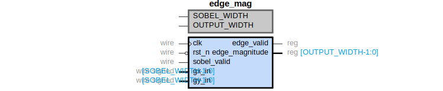

RTL Modules Documentation¶
Sobel Edge Detection Pipeline¶
sobel_processor¶
Top-level Sobel edge detection processor integrating all pipeline stages.
RTL Diagram:

Description:
The sobel_processor module implements a complete edge detection pipeline:
RGB565 to Grayscale conversion
3-line buffer for sliding window
Gaussian blur (noise reduction)
Sobel kernel (gradient computation)
Edge magnitude calculation
Parameters:
IMG_WIDTH: Image width (default: 640)IMG_HEIGHT: Image height (default: 480)PIXEL_WIDTH: Pixel bit width (default: 8)
Ports:
Port |
Direction |
Width |
Description |
|---|---|---|---|
|
Input |
1 |
System clock |
|
Input |
1 |
Active-low reset |
|
Input |
16 |
RGB565 pixel input |
|
Input |
1 |
Horizontal reference (line valid) |
|
Input |
1 |
Vertical sync (frame start) |
|
Input |
1 |
Enable edge detection |
|
Output |
16 |
RGB565 output (edges or passthrough) |
|
Output |
1 |
Output pixel valid signal |
rgb_to_gray¶
Converts RGB565 pixel format to 8-bit grayscale.
RTL Diagram:

Conversion Formula:
Implemented using fixed-point approximation:
line_buffer¶
Stores 3 image lines using BRAM to create a 3×3 sliding window.
RTL Diagram:

Features:
Triple line buffer using BRAM instances
Outputs 9 pixels in 3×3 arrangement
Circular buffer implementation
2-cycle read latency compensation
gaussian_blur¶
3×3 Gaussian blur filter for noise reduction before edge detection.
RTL Diagram:

Kernel:
Latency: 1 clock cycle
sobel_kernel¶
Computes horizontal (Gx) and vertical (Gy) gradients using Sobel operator.
RTL Diagram:

Sobel Kernels:
Output:
gx[10:0]: Horizontal gradient (signed 11-bit)gy[10:0]: Vertical gradient (signed 11-bit)
Latency: 1 clock cycle
edge_mag¶
Calculates edge magnitude from gradients.
RTL Diagram:
{kind=link}
Formula:
Uses Manhattan distance approximation for FPGA efficiency.
Scaling: Output is scaled by dividing by 2 (right shift 1 bit) for optimal edge visibility.
Latency: 2 clock cycles
bram¶
Block RAM wrapper for Gowin FPGA.
Module Diagram:
Configuration:
Simple Dual-Port mode
Port A: Write-only
Port B: Read-only
Read latency: 2 cycles (pipelined)
Synthesis Attributes:
(* ram_style = "block", syn_ramstyle = "block_ram" *)
UART Interface¶
uart_tx¶
UART transmitter module.
Specifications:
Baud rate: 115200 (configurable)
Data bits: 8
Stop bits: 1
Parity: None
uart_rx¶
UART receiver module with double-register synchronization.
Features:
Start bit detection
Mid-bit sampling
Frame error detection